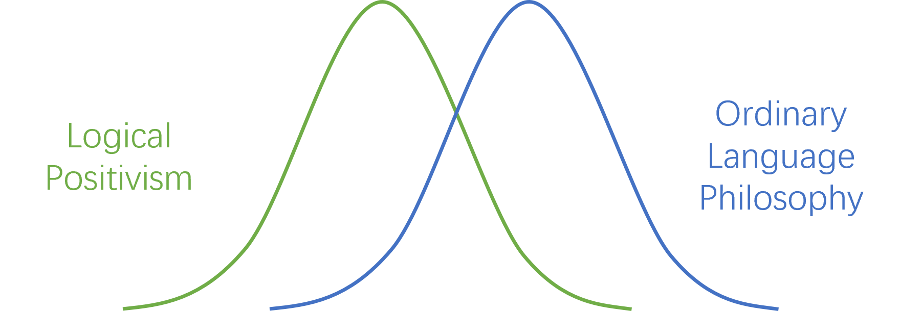

Ordinary Language Philosophers believe that
Not all discourse is scientific
All of the traditional philosophical problems are pseudo problems
According to them, these problems resulted from plucking ordinary language words/sentences out of their traditional contexts and putting them into another (perhaps neutral) language.
The peak periods of Logical Positivism and Ordinary Language Philosophy were different

Ordinary Language Philosophy related to
- Oxford - Austin, Ryle, Strawson, Grice, Hart, ...
- Cambridge - Wittgenstein, Ambrose, ...
Types of language other than Scientific (Descriptive) Language
Questions
Commands
Performatives
"I promise!"
"I quit!"
Questions
What is the meaning of a word? (mind, belief, law, ...)
They do not care about this
How are these words used?
They care more about this!
"Don’t Think, Look" -- Wittgenstein
If science is in the business of figuring out the facts, where does philosophy fit in?
Philosophy must be about figuring out how our words / language / concepts function
1. Wittgenstein
Blue Book
Main Question: What is the meaning of a word?
What didn't ordinary language philosophers like about this question?
In this question, "The meaning of a word" is a substantive noun makes us look for a thing that corresponds to it.
Wittgenstein's Response
Asking "What is an explanation of the meaning of a word?"
Philosophical Investigations
The meaning of a word is its use in the language
from
of Philosophical Investigations Language Games - Contextually specified rules of language
Certain phrases in one context might mean something different in another
Certain responses might be justified in one context but be unjustified in another
Example - from
of Philosophical Investigations The language is meant to serve for communication between a builder A and an assistant B. A is building with building-stones: there are blocks, pillars, slabs and beams. B has to pass the stones, and that in the order in which A needs them. For this purpose they use a language consisting of the words "block", "pillar", "slab", "beam". A calls them out;—B brings the stone which he has learnt to bring at such-and-such a call.
2. Gilbert Ryle
Ordinary Language
Ordinary Language & Ordinary Use of Language
Ordinary Language
The words / phrases that people ordinarily use in conversation
Colloquial, Vernacular
"water" instead of "
" Ordinary Use of Language
What OLP is about (Ryle) How a word is ordinarily used
Even technical words are ordinarily used in a certain way
Example - Knife
- Ordinary Use: Cutting
- Non-Ordinary Use: Using its handle as a hammer
Usage & Use
Usage
The actual practice of a language
Customs, Facts, Sociological Matters
Use
The rules that underlying the usage of a language
Philosophy is like map-making
- Ordinary use is like navigating in a neighborhood
- Figuring out the rules is like drawing the map (it could be hard)
Philosophy does examine concepts / use / meaning
- whether technical or vernacular
- this is a logical (rather than sociological / empirical) enterprise
- BUT it is not formal
3. Other Philosophers on Russell
Ordinary Language Philosophers challenged the idea that we could give a logic of language in the way that Russell was doing
In fact, they argued that certain classical laws of language are prone to counterexamples in ordinary language
Strawson - Rejects Commutativity of Conjunction
This happens when a conjunctive sentence represents an ordered series of events
Example
- They got married and they had a baby
- They had a baby and they got married
Austin - Rejects Contraposition
This happens when there is an underlying connection between the antecedent and consequent
Example
- If you don't want coffee, then there won't be any coffee in your cup
- If there isn't any coffee in your cup, then you don't want coffee